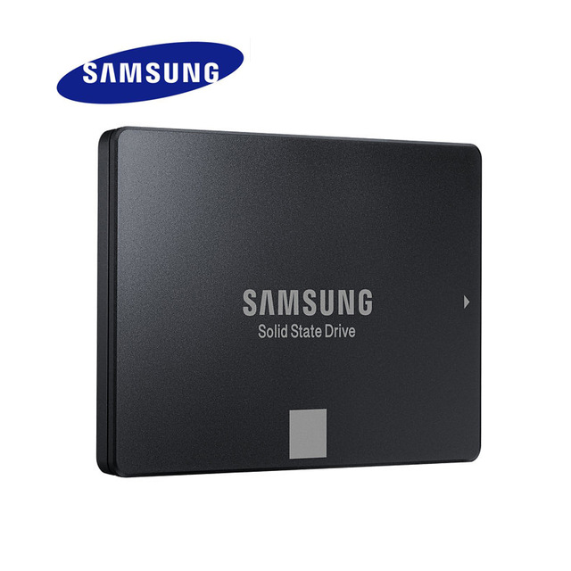
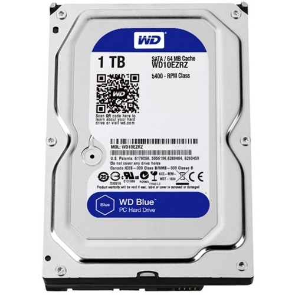

Det finnes HDD-harddisker (hard disk drive) og SSD-harddisk (Solid state drive), I tillegg til hybrider (SSHD). De tydeligste
forskjellene på harddiskene er pris og hastighet. HDD er en god del billigere enn SSD, men er samtidig ikke like
hurtig. Derfor er det ofte typisk (for stasjonær PC) å ha en stor HDD hvor man lagrer filer, bilder, videoer,
spill osv., mens man har en mindre SDD med for eksempel operativsystemet, som gjør at PCen starter opp mye raskere.
På laptoper, kanskje litt nyere/dyrere har man typisk en SSD, mens andre har HDD/SSHD. Begrensningen eller målingen
på hastigeheten til en HDD er hvor lang tid det tar for lesehodet å bevege seg på platen. Dermed kan man si at
HDD'er har en "maksimum hastighet".
En HDD har bevegelige deler, og består av et skrive- og lesehode, platelagerskiver, lese- og skrivearmer, i tillegg til elektriske
kretser og motor, som da er inne i en beholder (alle komponentene).
Derimot har en SSD ikke det (bevegelige deler) - Derfra navnet "Solid state drive". SSD'er bruke integrerte kretsaggregater
som minne for å lagre dataene vedvarende (at det ikke forsvinner med en gang ved strømbrudd slik som RAM), men
vil forsvinne over lengre tid (1-2år), på grunn av at dataen er lagret i elektriske ladninger. Den første SSD'en
kom i 1991. Den var på 20MB og kostet 1000 dollar.
Tilbake til hovesiden